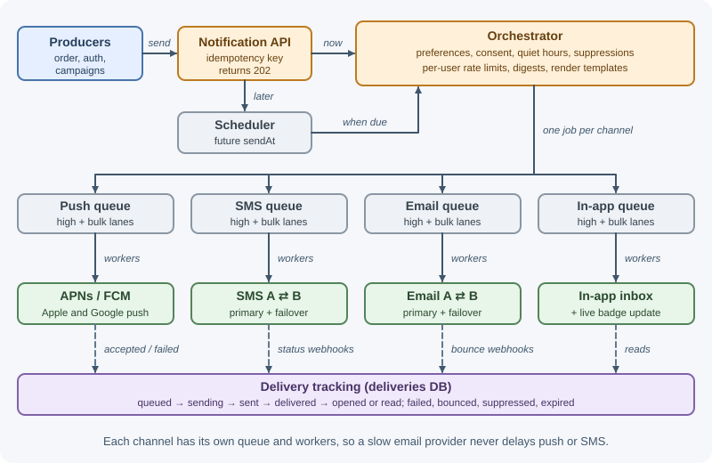
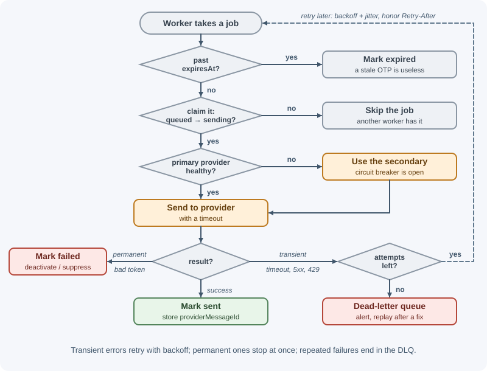

Case Study: Notification System¶
A notification system lets every other service in a company say "tell this user that X happened" without knowing how. It decides which channels to use — mobile push, SMS, email, in-app — according to the user's preferences, renders the right template, sends through third-party providers, retries failures, avoids duplicates and spam, and tracks what was delivered. Its challenges are reliability across unreliable providers, respecting user choices and regulations, and handling huge campaign bursts without delaying urgent messages.
Requirements¶
Functional¶
- Internal services send a notification for one user or a list of users, with a category (security, order updates, marketing) and template data.
- Channels: mobile push (APNs for iOS, FCM for Android), SMS, email, and in-app (a notification center plus a live badge).
- Templates per channel and language, with variables.
- User preferences: per category and channel, global unsubscribe, quiet hours; mandatory categories (security alerts) cannot be disabled.
- Scheduling: send at a specific time, including "9 AM in the user's time zone."
- Delivery tracking: queued, sent, delivered, opened/read, failed, bounced.
- No duplicates when callers or queues retry; rate limits so users are not spammed.
Non-functional¶
- Scale: 50 million users; ~60 million notifications per day; campaigns of 50 million messages within an hour.
- Latency by priority: high-priority messages (sign-in codes, security alerts) delivered to the provider within seconds, even during campaigns; bulk marketing can take hours.
- Reliability: no accepted notification is lost (at-least-once processing, deduplicated).
- Isolation: an outage at one channel's provider must not delay others.
- Compliance: honor opt-outs and consent (email unsubscribe, SMS STOP).
Capacity estimates¶
Assumptions: per day — 20 M push, 2 M SMS, 10 M email, 30 M in-app notifications; 1 KB of stored metadata per delivery; 90-day retention for delivery logs; a marketing campaign to 50 M users in one hour.
Daily total: ~62 M /day → ~620 /s average (62 × 10^6 ÷ 10^5)
Campaign peak: 50 M ÷ 3,600 s ≈ 14,000 /s on top of normal traffic
Delivery log: 62 M × 1 KB = 62 GB/day
90-day retention: 62 GB × 90 ≈ 5.6 TB (× replicas)
SMS: 2 M /day ≈ 20 /s average — limited mainly by provider
and sender-number throughput, not by our servers
Conclusions: average load is modest; the design is driven by bursts, priorities, provider limits, and reliability. Queues absorb campaign spikes; priority separation keeps urgent messages fast.
API design¶
Send (internal, called by other services):
POST /v1/notifications
Idempotency-Key: order-812-shipped
{ "userIds": ["u_42"],
"category": "order_updates",
"templateId": "order_shipped",
"data": { "orderId": "812", "eta": "2026-11-09" },
"priority": "normal", ("high" | "normal" | "bulk")
"channels": ["push", "email", "in_app"], (optional; default from category)
"sendAt": "2026-11-08T09:00:00", (optional; local time when "timeZone": "user")
"expiresAt": "2026-11-10T00:00:00Z" } (optional; drop if not sent by then)
202 Accepted
{ "notificationId": "n_7f3a9c", "status": "accepted" }
GET /v1/notifications/n_7f3a9c
→ { "id": "n_7f3a9c", "deliveries": [
{ "channel": "push", "status": "sent" },
{ "channel": "email", "status": "delivered" },
{ "channel": "in_app","status": "read" } ] }
User-facing:
GET /v1/me/notifications?cursor=... in-app notification center
POST /v1/me/notifications/{id}/read
GET /v1/me/notification-preferences
PUT /v1/me/notification-preferences { "marketing": { "email": false, "push": true }, ... }
POST /v1/me/devices { "platform": "ios", "pushToken": "..." }
Provider callbacks (webhooks): delivery, bounce, and complaint events from email and SMS providers, verified by signature. See webhooks.
Data model¶
| Table / collection | Key | Contents |
|---|---|---|
templates |
(templateId, channel, locale, version) |
Subject, body with placeholders, status (draft/approved) |
preferences |
(userId) |
Per category × channel switches, quiet hours, time zone, global unsubscribe |
consents |
(userId, channel, purpose) |
When and how consent/opt-out was recorded (audit) |
devices |
(userId, deviceId) |
Platform, push token, active, last seen |
suppressions |
(channel, address) |
Hard-bounced emails, complaint addresses, numbers that sent STOP |
notifications |
notificationId; unique (sourceService, idempotencyKey) |
Category, template, data, priority, sendAt, expiresAt |
deliveries |
(notificationId, channel, target) |
Status, provider, providerMessageId, attempts, last error, timestamps; index on providerMessageId for webhooks |
inbox |
(userId, createdAt DESC) |
In-app items: title, body, deep link, readAt |
Delivery logs are high volume and time-based; store them in a partitioned table or a store with TTL so old rows expire automatically.
High-level design¶

Each queue also has a dead-letter queue with alerting; the worker-side retry and failover logic is shown in deep dive 2.
Send path:
- A service calls the API with an idempotency key. The API validates the
request, stores the notification (or returns the existing one for a
repeated key), and responds
202. - Future
sendAtvalues go to the scheduler; others go straight to the orchestrator queue. - The orchestrator applies preferences, consent, suppressions, quiet hours,
and rate limits; renders each channel's content; creates
deliveriesrows inqueuedstate; and enqueues one job per channel and target into that channel's high-priority or bulk queue. - Channel workers send to providers, record the result, and retry or dead-letter failures.
- Provider webhooks update delivery status (delivered, bounced). In-app workers write to the inbox and push a live badge update to connected clients.
Read path (in-app center): the client lists inbox for the user with
cursor pagination; unread count is cached per user.
Deep dives¶
1. Preferences, opt-outs, and compliance¶
For each notification and channel, the orchestrator asks:
Is the category mandatory (security, legal, transactional)? → send (respect only hard limits)
Otherwise:
global unsubscribe for this channel? → skip
category × channel disabled by the user? → skip
address suppressed (bounce, complaint, STOP)? → skip
consent required and missing (e.g. marketing SMS)? → skip
within quiet hours and not urgent? → delay until quiet hours end
- Email: include
List-UnsubscribeandList-Unsubscribe-Postheaders for one-click unsubscribe (RFC 8058), required by major mailbox providers for bulk senders; honor unsubscribes promptly; suppress hard bounces and spam complaints to protect sender reputation. - SMS: honor STOP keywords and record consent; marketing SMS needs prior opt-in in many jurisdictions. Respect local sending hours.
- Push: the operating system also lets users disable notifications; an invalid or unregistered token response means deactivate that device.
- Templates: render per locale, escape variables in HTML email, and respect channel limits — SMS segments (160 GSM-7 characters, or 70 when non-GSM characters such as emoji force UCS-2), and push payloads of about 4 KB for APNs and FCM.
Record every consent and opt-out change with a timestamp and source — this is the audit trail regulators ask for.
2. A queue per channel, priorities, retries, and dead letters¶

Separate queues per channel give isolation and independent scaling: an email provider outage fills the email queue while push keeps flowing, and SMS workers can be throttled to the provider's throughput without affecting anyone else.
Priority lanes within each channel (high and bulk) ensure a sign-in code never waits behind 50 million campaign emails. Workers always drain the high lane first, or dedicated workers serve it.
Retries:
| Error | Example | Action |
|---|---|---|
| Transient | Timeout, provider 5xx, 429 |
Retry with exponential backoff and jitter; honor Retry-After |
| Permanent (recipient) | Invalid or unregistered push token, hard bounce, invalid phone number | Do not retry; deactivate device or add to suppressions |
| Permanent (content) | Template rendering error, payload too large | Do not retry; alert the sending team |
| Expired | expiresAt passed (an OTP after 5 minutes) |
Drop and mark expired |
After the maximum attempts, jobs go to a dead-letter queue with the error; alerts fire when DLQs grow; operators can replay after fixing the cause. See timeouts, retries, and idempotency and messaging patterns.
3. Deduplication and idempotency¶
Duplicates can enter at three points:
- The caller retries the API request → the unique
(sourceService, idempotencyKey)returns the existing notification instead of creating another. - The queue redelivers a job (at-least-once delivery) → before sending,
the worker atomically moves the delivery row from
queuedtosendingwith a conditional update; if the update matches no row, another worker already took it, so skip. - The worker crashes after the provider accepted the message but before
recording
sent→ a retry may send again. True exactly-once across a third-party provider is impossible; keep this window tiny, and use provider idempotency keys where available.
Push also supports collapsing, useful for "order status" updates. With
APNs, notifications that share an apns-collapse-id are shown as a single
notification. With FCM, an Android notification tag makes a new
notification replace one already shown in the notification drawer, while
collapse_key lets a newer message replace an older one that has not been
delivered yet (for example, while the device is offline). See
delivery guarantees.
4. Rate limiting, batching, and scheduling¶
- Per-user limits: for example, at most 3 marketing pushes per day and 1 per hour; transactional messages are exempt or have separate limits. Implemented with token buckets in Redis (see the rate limiter case study).
- Digests: instead of "Alex liked your photo" ten times, hold low-priority events for a short window and send one "Alex and 9 others liked your photo."
- Per-provider limits: SMS throughput depends on the sender number type; APNs and FCM enforce limits too. Workers use a token bucket per provider account to stay under them.
- Campaign pacing: large campaigns are enqueued gradually (or consumed at a capped rate) so they never saturate providers or downstream systems such as the app servers that users open after tapping a notification.
- Scheduling:
sendAtis stored with an index on(status, sendAt); the scheduler moves due notifications to the orchestrator queue (or uses delayed jobs). "9 AM local time" is computed per user from their time zone, so a global campaign runs over about 24 hours. Before sending, workers re-check that the notification was not cancelled. See background jobs and scheduling.
5. Delivery tracking and provider failover¶
Tracking: each deliveries row moves through
queued → sending → sent → delivered → opened/read, or to failed,
bounced, suppressed, expired. Sources of truth differ by channel:
- Email and SMS: providers send webhooks (delivered, bounced,
complained, undelivered) referencing
providerMessageId. - Push: APNs and FCM confirm they accepted the message, not that the device displayed it; "opened" comes from the app reporting a tap.
- Email opens via tracking pixels are unreliable (some mail clients prefetch images); clicks are a better signal.
- In-app: the client reports reads.
Aggregate these into analytics per template and campaign.
Provider failover: wrap each channel's providers behind one interface. For SMS and email, configure a primary and a secondary provider; a circuit breaker watches error rates and latency and switches traffic to the secondary when the primary degrades.
- Email failover requires both providers to be authenticated for your sending domain (SPF, DKIM, DMARC alignment), and sudden volume shifts can hurt deliverability — keep the secondary warm with a small share of traffic.
- Push has no alternative path: only APNs delivers to iOS devices and FCM to most Android devices, so outages are handled by queuing and retrying.
Bottlenecks and trade-offs¶
- What fails first: third-party providers (rate limits, outages) — not our servers. Queues, per-provider throttling, retries, and failover handle it.
- Campaign bursts vs urgent messages: solved with priority lanes and campaign pacing; without them, OTPs would arrive late during sales events.
- Preference lookups at 14,000 messages/s: cache preferences and suppressions in Redis or in-process with short TTLs; invalidate on change.
- At-least-once vs duplicates: accepted rare duplicates in exchange for never losing messages; minimized with idempotency keys, conditional status updates, and collapse IDs.
- One orchestrator vs per-service sending: centralizing gives consistent preferences, compliance, and tracking, at the cost of a shared dependency — so the API and queues are run with high availability.
- Alternatives considered: one queue for all channels (rejected: one slow provider blocks everything); synchronous sending in the API (rejected: provider latency and outages would propagate to callers); storing rendered content for every notification forever (rejected: storage cost; keep template ID, version, and data instead).
Real-world references¶
- Netflix's RENO (Rapid Event Notification System) sends server-initiated updates to member devices. Because a phone is almost always reachable but a smart TV is online only while in use, Netflix "chose a hybrid Push AND Pull communication model": the server pushes to devices immediately, and devices also call home at stages of the app lifecycle. Events are routed to priority-based Amazon SQS queues with matching processing clusters, so each priority can be tuned and scaled independently, and a Cassandra store keeps each device's notifications so devices can poll at their own cadence; online devices are reached over Zuul Push persistent connections (Rapid Event Notification System at Netflix).
- Slack found that answering whether a notification was sent, where it was sent, whether it was viewed, and whether it was opened took several days and expertise across the whole stack, so it built end-to-end tracing of the notification flow across its backend (Tracing Notifications). Delivery tracking is a first-class requirement, not an afterthought.
In production¶
- Campaigns delay one-time codes. Symptom: sign-in codes arrive minutes late during a marketing send. Detect: age of the oldest message per queue and priority. Cause: urgent and bulk messages share a queue or workers. Fix: separate priority lanes with dedicated capacity; pace campaigns.
- A provider outage. Symptom: SMS or email error rate jumps. Detect: per-provider error-rate and latency alerts. Cause: the provider is degraded. Fix: circuit breaker failover to the secondary provider; queue and retry for push, which has no alternative path.
- Duplicate notifications. Symptom: users receive the same message
twice after a deploy. Detect: duplicate-send metrics by idempotency key,
user reports. Cause: queue redelivery after workers restarted
mid-send. Fix: conditional
queued → sendingstatus updates, provider idempotency keys, push collapse IDs. - Many invalid push tokens. Symptom: a rising share of push sends fail. Detect: invalid/unregistered token error rate. Cause: uninstalled apps and rotated tokens. Fix: deactivate tokens on those responses; refresh tokens when the app starts.
- Email lands in spam. Symptom: open and click rates fall. Detect: bounce and complaint rates from provider webhooks. Cause: sending to stale addresses or ignoring complaints. Fix: suppression lists, domain authentication, gradual volume changes.
- Messages at 3 AM. Symptom: complaints about night-time alerts. Detect: send-time histogram in users' local time. Cause: schedules computed in server time. Fix: store user time zones; enforce quiet hours at send time.
Revision questions¶
- Why does the system use a separate queue per channel and separate priority lanes?
- Which errors should be retried, which should not, and what happens after the last retry?
- Identify three places duplicates can arise and how each is prevented.
- How do user preferences, suppressions, consent, and quiet hours combine to decide whether to send?
- Why can't push notifications fail over to another provider, while SMS and email can?
- How would you send a campaign at 9 AM local time to users worldwide without overloading providers?